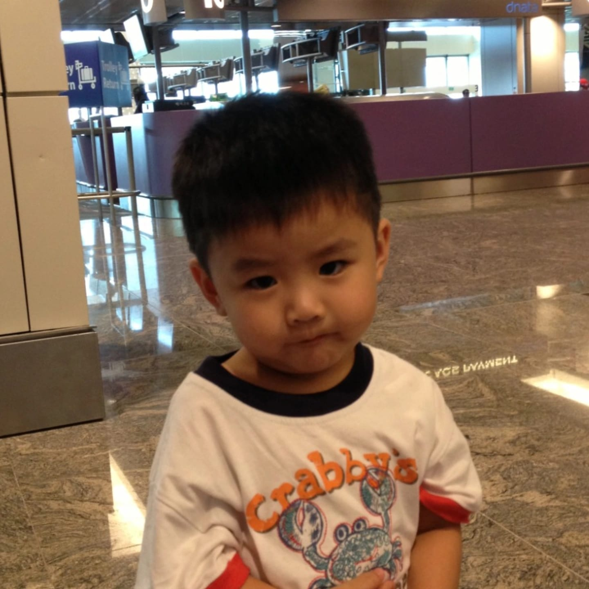

Lawzer Lovich
Aspiring Product Designer & UX Intern
Senior completing a B.S. in Computer Science at BINUS University. Currently working as a Product Design Intern at PulseTech Solutions, where I design accessible interfaces and improve user onboarding.
Experience & Projects
- PulseTech Solutions (Intern): Redesigned onboarding flows, reducing user drop-off by 14%.
- CampusBites Capstone: Designed a meal-prep mobile app for students using Figma and user research.
- ShopPulse E-Commerce UI: Developed a fully responsive web storefront featuring clean item filtering and dynamic cart states using HTML, CSS, and JavaScript.
- Taskify Productivity Dashboard: Built an intuitive task-management mobile dashboard concept focused on quick gesture shortcuts and simplified daily scheduling.
Skills
Figma, Wireframing, Usability Testing, HTML/CSS, React.js, Git.

My Background & Roots
Born and raised in the fast-paced, vibrant city of Jakarta, growing up surrounded by constant energy and diverse perspectives taught me early on how people interact with the world—and technology—around them. Living in a bustling metropolis sparked my curiosity for how everyday systems, apps, and digital experiences can either frustrate users or make their lives effortlessly smooth.
My foundational years at MGIS played a huge role in shaping my mindset, work ethic, and collaborative spirit. Between balancing academics, group projects, and campus life, I discovered a love for creative problem-solving and visual storytelling. That curiosity naturally led me to pursue a B.S. in Computer Science at BINUS University, where I bridge the gap between technical engineering and human-centered product design.
Outside of coursework and design sprints, I enjoy diving into competitive gaming, analyzing interface details in my favorite apps, and experimenting with front-end web layouts. Everything I build is driven by a desire to make digital products feel intuitive, clean, and genuinely enjoyable to use.
Strengths
- Devoted & Loyal: Once I commit to a team, a project, or a vision, I stick with it through every iteration. You can always count on me to show up, support my teammates, and see things through to the finish line.
- Technical + Creative Bridge: With a Computer Science foundation and a passion for UI/UX, I don't just design pretty screens—I understand how components are built in code, making developer handoffs smooth and realistic.
- Empathetic Problem Solver: I naturally put myself in the user's shoes, questioning why a button feels awkward or why a flow feels confusing until the experience clicks effortlessly.
- Calm Under Pressure: Whether debugging a layout right before a deadline or pivoting a design after usability testing, I keep a level head and focus on practical solutions.
Weaknesses & Growth Areas
- Forgetting Minor Details: When I get deeply locked into big-picture ideas or visual layouts, small edge cases or routine reminders can occasionally slip past me. To counter this, I rely heavily on structured checklists, Notion boards, and design system audits.
- Battling Procrastination ("Lazy" Moments): Repetitive, monotonous tasks can sometimes drain my momentum and tempt me to put things off. I've learned to break large tasks into short, timed sprints to keep my energy high and stay consistent.
- Over-Polishing Early Drafts: I sometimes spend too much time perfecting colors, spacing, and typography on low-fidelity wireframes when I should be validating the core user flow first.
- Quiet in Large Rooms: In brand-new group settings, I tend to observe and listen first before speaking up—though once I warm up, I'm fully invested in brainstorming and feedback.
Let's Connect
Have a project in mind, want to chat about product design, or just want to say hi? Feel free to reach out through any of the channels below: